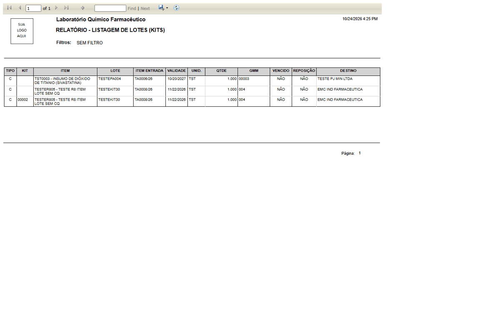

DV-EST-121 · A Listagem de Lotes (Kits) mostra o mesmo lote enviado em duas linhas e inclui a remessa manual que não é de kit
Sem filtro, o relatório mostra três linhas: o lote `TESTEPA004` (remessa manual 00003, destino `TESTE PJ MIN LTDA`, sem kit) e o lote `TESTEKIT30` (remessa 004) **duas vezes**: uma linha sem código de kit e outra com o kit 00002. A remessa 00003 não foi gerada por solicitação de kit, mas o relatório de kits a lista. Quem usa o relatório para recolher um lote vê uma remessa a mais e uma quantidade em dobro.
Como reproduzir o erro, passo a passo
- Ter uma remessa de kit liberada (remessa 004, lote TESTEKIT30) e uma remessa manual (00003).
- Abrir Relatórios › Relatório - Listagem de Lotes (Kits) e clicar em GERAR RELATÓRIO sem filtro.
Esperado
Uma linha por lote enviado dentro de um kit; remessa sem kit fora do relatório de kits.
Obtido
TESTEKIT30 duas vezes (uma sem kit, uma com kit 00002) e a remessa 00003 listada.
Evidência (captura da tela)
